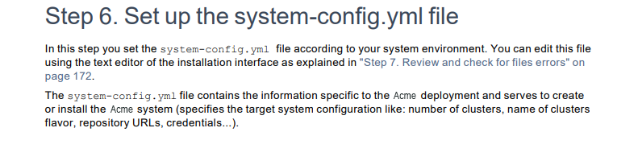
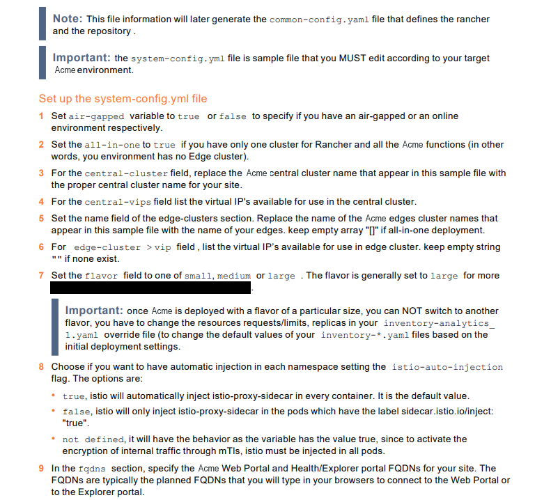
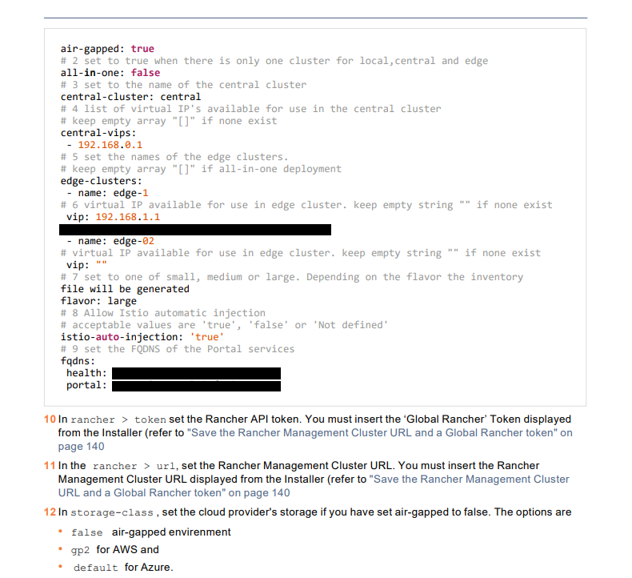
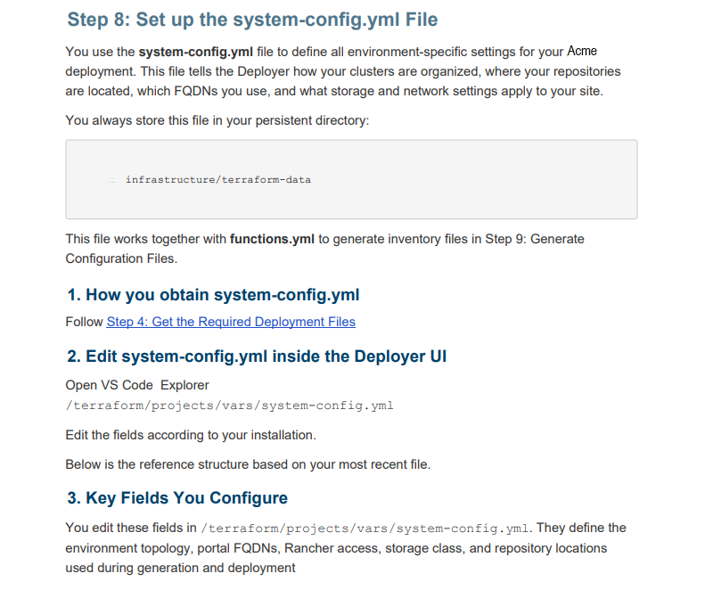
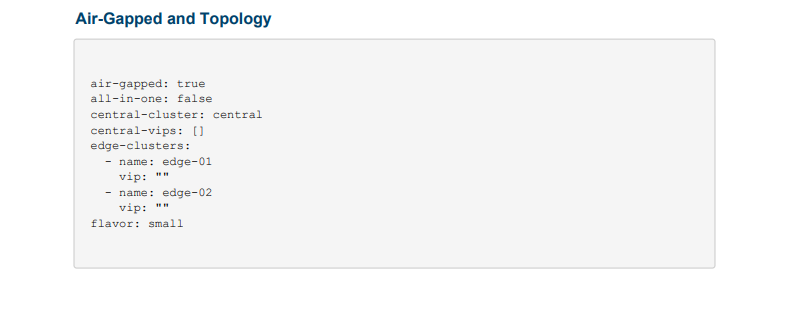
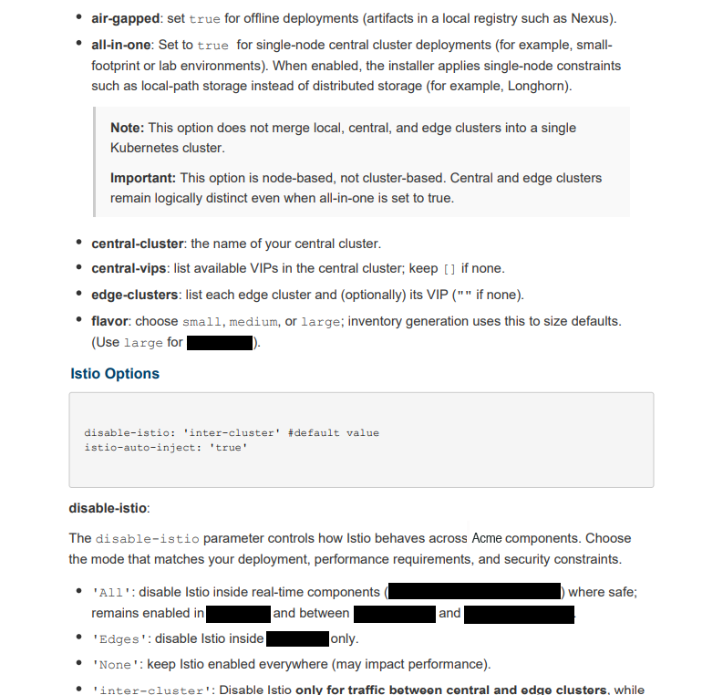

I restructured documentation for an infrastructure product across four guides: a 382-page Installation and Upgrade Guide, a 580-page Configuration Guide, a Site Preparation Guide, and Release Notes. I reorganized the content to match the user workflow, moved prerequisites closer to the steps where they are needed, standardized terminology, and simplified the language.
I worked independently on the restructuring and rewriting of the guides, reorganizing the content, improving the structure, and adding missing context.
One example is the following installation step, covering the system-config.yml file. I reorganized the original flat structure into three task-based sections: obtaining the file, editing it, and understanding what each field configures.






The restructuring made the guides easier to navigate, scan, and use as a reference, with clearer terminology, more focused explanations, and a more consistent structure.